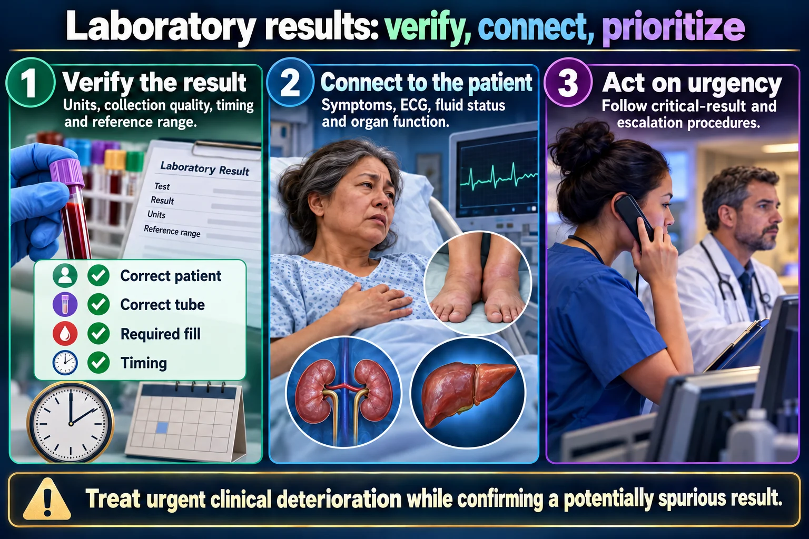

Which abnormal result you act on FIRST — and exactly what you do about it
This is the page to open before a clinical shift and before any “which client do you see first?” question. Every entry is built the same way: the value → what it does to the body → what you do about it. If you only ever learn four things from the whole labs batch, learn potassium, sodium, glucose and the ABG — those four sit behind most of the results that will make you pick up the phone.
📄 Simple Nursing original — opens in Drive →
Before you compare numbers, sort the clients. The sort is always the same.

Treat urgent clinical deterioration while confirming a potentially spurious result.
Verify the result
Units, collection quality, timing and reference range.
Connect to the patient
Symptoms, ECG, fluid status and organ function.
Act on urgency
Follow critical-result and escalation procedures.
Electrolytes
Potassium, sodium, calcium and magnesium can affect neurologic or cardiac function.
Kidney markers
Creatinine and estimated filtration require trend and context.
Response
Document notification, interventions and follow-up results.
Figure 1 — the A-B-C ladder drawn as the organs each letter protects, with the laboratory values that threaten each organ attached by leader lines. Work down it, never across it.
Airway and Breathing outrank everything. Then Circulation. Then Disability (neuro). A frightening neuro number never jumps ahead of a failing airway.
Answer first: a moving number beats a parked number.
A hemoglobin of 8.4 that was 11.2 this morning is far more urgent than a hemoglobin that has sat at 8.2 for a week. The same is true of creatinine, potassium and platelets.
Always ask: what was it last time, and how long ago?
Figure 2 — the classic four-client question drawn out. The reasoning panel underneath is the thinking you should be able to do in about twenty seconds.
Any chest pain — even with a perfectly good indigestion story — is treated as cardiac until an ECG and a troponin say otherwise.
Never let a plausible non-cardiac explanation talk you out of an ECG.
The same logic applies to: unrelieved pain under a cast (compartment syndrome), a systolic over 180 with symptoms (hypertensive crisis), and severe hypotension (shock).
The tell: pain that is out of proportion and NOT relieved by the ordered analgesia, in a limb with a cast, a splint, a fracture or a crush injury.
Do not elevate above heart level and do not apply ice — both reduce arterial flow. Call the provider.
Seeing a client first does not mean doing everything for them first. It means laying eyes on them and assessing.
Assessment is almost always the correct first action — but not when the situation is already an emergency you can fix (a client who is choking, a stopped IV of insulin, an unconscious hypoglycemic client).
Potassium, sodium and glucose. Three labs behind an enormous share of rapid responses.
Figure 3 — four rhythm strips on calibrated ECG paper. If you can recognize the tented T and the flat-T-plus-U at a glance, you can answer most potassium questions without reading the stem twice.
Value: above 5.0 mEq/L. Commonly critical at about 6.0–6.5 and above.
What it does: the resting membrane potential drifts up, so the heart first becomes irritable and then cannot repolarize. Tall peaked T waves → flat/absent P → widening QRS → sine wave → V-fib and arrest. Muscles tingle, then go weak; bowel sounds go hyperactive.
What you do: cardiac monitor first. Hold every potassium source — IV fluids with K⁺, oral supplements, salt substitutes, potassium-sparing diuretics, ACE inhibitors/ARBs. Recheck the level (a hemolysed specimen can fake a high K⁺). Then call.
Ladder logic: protect → shift → remove. Every drug on this ladder is given per provider order — the nurse's independent first actions are the cardiac monitor and holding all potassium sources.
Value: below 3.5 mEq/L. Commonly critical at about 2.5 and below.
What it does: everything gets low and slow. Flat T waves, ST depression, a U wave, PVCs. Weak legs, decreased reflexes, constipation and ileus — and the sign students miss, shallow respirations, because the diaphragm is a muscle.
What you do: assess the respirations and the rhythm. Check urine output before replacing. Replace on a pump.
Potassium is NEVER given IV push. Ever.
IV replacement is always diluted, always on an infusion pump, and never faster than the ordered rate — commonly a maximum of 10–20 mEq per hour through a peripheral line, and only with a rhythm monitored.
Figure 4 — one axis, low on the left, high on the right, with the clinical consequence written under the zone that causes it. Redraw this from memory and you own potassium.
Value: normal 135–145 mEq/L. Danger usually below about 120 and above about 160.
What it does: water follows salt, so sodium is a brain lab. Low sodium → water moves into brain cells → cerebral edema → headache, confusion, seizures, coma. High sodium → water is pulled out → thirst, dry sticky tongue, flushed skin, agitation → seizures.
What you do: neuro checks and seizure precautions. Strict intake/output and daily weights. Fluid restriction for dilutional hyponatremia; hypertonic saline only per order, slowly, on a pump.
Correcting sodium too fast is its own emergency.
Never “catch up” a missed hypertonic saline rate, and never free-flow it.
Expect frequent serum sodium levels during correction — that is the monitoring, and it is your job to make sure they are drawn.
Figure 5 — the same skull three times. The skull is the fixed box; only the brain changes. That is the entire reason sodium is dangerous.
Value: typical adult fasting 70–110 mg/dL (many laboratories use the tighter fasting 70–99). Treat below 70; below 50–54 is a true emergency.
What it does: the brain stores no fuel. Shaky, sweaty, tachycardic and hungry first; then confused, slurred, combative; then seizure and coma.
What you do: conscious and able to swallow → 15 g of fast carbohydrate, recheck in 15 minutes. Unconscious or NPO → IV dextrose 50% or glucagon per order. Then a complex carbohydrate with protein so it does not fall again.
High glucose matters too, but it kills over hours (DKA/HHS), not minutes.
Figure 6 — glucose on one axis with a starved neuron at one end and a fed neuron at the other. The center panel is the treatment sequence.
Two numbers define respiratory failure. Learn them as a pair and you will never mix them up.
Figure 7 — one alveolus and its capillary, drawn twice. Oxygen failing to get in is a different emergency from carbon dioxide failing to get out, and only an ABG separates them.
Typical adult reference ranges — verify against the ranges printed on your own result.
Respiratory Opposite · Metabolic Equal.
| pH | CO₂ / HCO₃ | Answer |
|---|---|---|
| ⬇ low | CO₂ ⬆ high | Respiratory acidosis |
| ⬆ high | CO₂ ⬇ low | Respiratory alkalosis |
| ⬇ low | HCO₃ ⬇ low | Metabolic acidosis |
| ⬆ high | HCO₃ ⬆ high | Metabolic alkalosis |
Respiratory problems move the pH and the CO₂ in opposite directions; metabolic problems move the pH and the bicarbonate in the same direction.
What it does: tissues stop getting oxygen. The brain shows it first: restless → agitated → confused. The skin goes pale, dusky, cool and clammy. Cyanosis is a late sign.
What you do: sit them up, apply oxygen, stay in the room, and call. Expect a higher-flow device or non-invasive ventilation per order.
Never label a newly restless, agitated client as “anxious” until you have ruled out hypoxia.
What it does: carbon dioxide is an acid. It builds up, the pH falls, and the client becomes drowsy and hard to rouse (CO₂ narcosis) with a headache and warm flushed skin.
What you do: the quiet, sleepy, tiring client is the dangerous one. Escalate: BiPAP is the usual next step per order; if they cannot protect the airway or BiPAP fails, intubation and mechanical ventilation.
SpO₂ measures oxygen only. It says nothing about carbon dioxide.
A client on oxygen can hold a comfortable-looking SpO₂ 94% while their PaCO₂ climbs to 70 and their pH falls. That is why the question stem gives you an ABG and not a probe reading.
The probe also lies with: poor perfusion, cold hands, motion, nail polish, and carbon monoxide poisoning (falsely normal or high).
The counts that mean the client cannot fight infection, and the numbers that mean they cannot stop bleeding.
Figure 8 — the same magnified blood field with plenty of neutrophils and with almost none. The bacteria are drawn to the same scale in both, so the difference is the defense, not the infection.
Value: total WBC below about 5,000/mm³ is leukopenia; the number that actually matters is the ANC below 500 cells/µL.
What it does: without neutrophils the client cannot make pus, cannot make redness and cannot mount much of a fever — the usual signs of infection are missing. Infection goes from unnoticed to septic very quickly.
What you do: a temperature of 100.4 °F (38 °C) is treated as sepsis until proven otherwise — cultures, call the provider, antibiotics fast. Protective precautions stay up.
Causes to expect on the chart: chemotherapy, immunosuppressants, steroids, HIV, autoimmune disease.
Figure 9 — the same torn vessel with a working plug and a failing one, then the three numbers that predict which of the two you are about to get.
Low-molecular-weight heparin (enoxaparin) is not monitored with routine aPTT — an anti-Xa level is used when monitoring is needed.
Bleeding precautions: soft toothbrush, electric razor, no flossing, avoid IM injections, hold pressure longer after any needle stick, fall precautions, no NSAIDs or aspirin unless ordered.
Value: typical adult roughly 12–18 g/dL overall — about 12–16 for women and 14–18 for men.
What it does: less carrier means less delivered oxygen — pale skin, cool clammy skin, fatigue and weakness, tachycardia and shortness of breath on effort.
Value: typical adult 0.6–1.2 mg/dL. Over 1.3 means a damaged kidney; a creatinine that is rising day on day is an acute injury happening now.
Pair it with urine output: less than 30 mL/hr is kidney distress and needs reporting.
Why it belongs on a priority page: a failing kidney is the most common reason a client ends up hyperkalemic — and it changes the dose of a great many drugs.
You found it. Now say it in a way that gets an order in under two minutes.
If the number does not fit the client at all, say so — but never delay the call while you wait for a redraw.
Suspecting a bad specimen does not mean you sit on the result. Report it and redraw per policy at the same time.
| Result | Report? |
|---|---|
| Hemoglobin 6 g/dL | ✅ Yes — transfusion territory |
| Potassium 6.5 mEq/L | ✅ Yes — rhythm emergency |
| Sodium 150 mEq/L | ✅ Yes — neuro risk |
| WBC 2,000/mm³ | ✅ Yes — cannot fight infection |
| Platelets 45,000/mm³ | ✅ Yes — bleeds with minor trauma |
| Temp 100.4 °F in a neutropenic client | ✅ Yes — treat as sepsis |
| BUN 19 mg/dL | ❌ No — still within 10–20 |